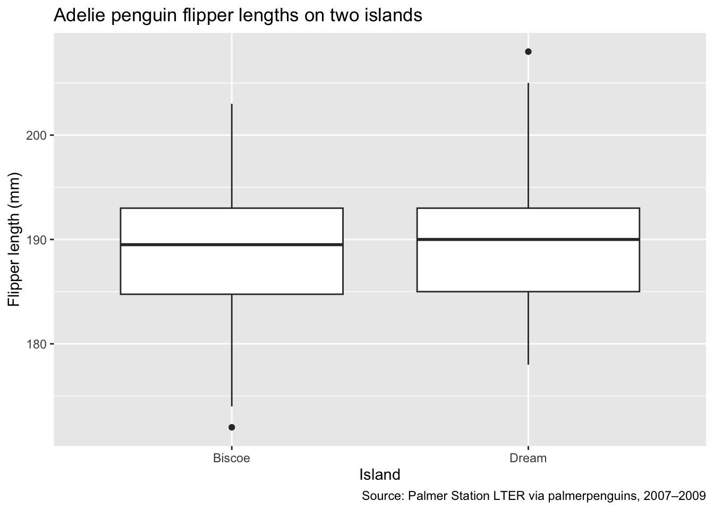
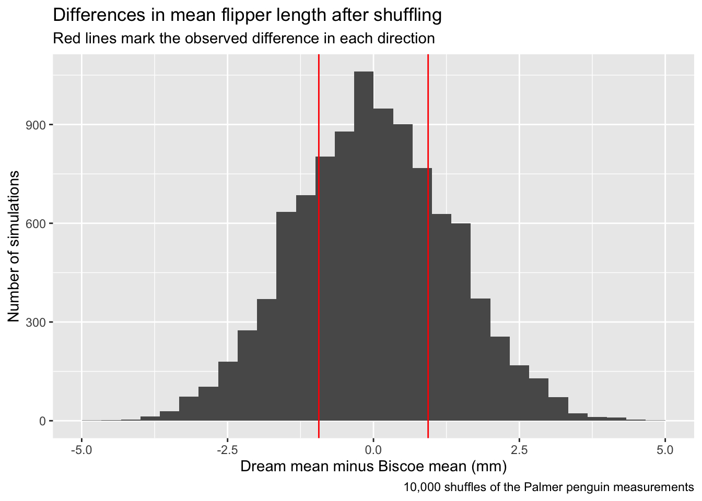

library(tidyverse)
penguins <- read_csv("data/penguins.csv")Adelie Penguin Flipper Lengths on Two Islands
Question
Do Adelie penguins on Biscoe and Dream islands have different average flipper lengths?
For this project, I compare flipper lengths on the two islands using the Palmer penguins dataset. I use only Adelie penguins so that differences between species do not affect the comparison. I first graph the measurements and calculate the difference in the two averages. Then I shuffle the measurements 10,000 times to see how often a difference at least this large comes up by chance under the null hypothesis.
The data come from the palmerpenguins package. Dr. Kristen Gorman and the Palmer Station Long Term Ecological Research program collected the original measurements in Antarctica during 2007–2009. Each row is one penguin. I use species to choose Adelie penguins, island to choose Biscoe and Dream, and flipper_length_mm for flipper length in millimeters.
Choose the observations
I keep Adelie penguins from Biscoe and Dream islands with a recorded flipper length. The dataset contains 44 Adelie penguins from Biscoe and 56 from Dream. None of these 100 penguins is missing a flipper length, so the missing-value filter does not remove any of them. I use the package’s penguins.csv file, saved in this website’s data folder so the analysis can run from the repository.
adelie <- penguins |>
filter(
species == "Adelie",
island == "Biscoe" | island == "Dream",
!is.na(flipper_length_mm)
)Make a graph
Each box shows the middle half of the flipper lengths on one island. The line inside the box marks the median.
ggplot(adelie, aes(x = island, y = flipper_length_mm)) +
geom_boxplot() +
labs(
title = "Adelie penguin flipper lengths on two islands",
x = "Island",
y = "Flipper length (mm)",
caption = "Source: Palmer Station LTER via palmerpenguins, 2007–2009"
)
The flipper lengths overlap substantially across the two islands. The medians are also close together. This graph shows the spread of the measurements, but I use the difference in means for the test below.
Calculate the difference
My test statistic is the mean flipper length on Dream minus the mean on Biscoe. A positive number means the Dream average is higher. I use arrange(island) to put Biscoe first and Dream second, so diff() subtracts the Biscoe mean from the Dream mean.
island_means <- adelie |>
group_by(island) |>
summarise(mean_flipper = mean(flipper_length_mm)) |>
arrange(island)
observed_difference <- diff(island_means$mean_flipper)The average flipper length is 188.8 mm on Biscoe and 189.73 mm on Dream. The observed difference is 0.94 mm.
Run the simulation
The null hypothesis is that flipper length and island are unrelated among the Adelie penguins being compared. Under this model, the population means are equal. The alternative hypothesis is that the population means differ. I test for a difference in either direction and use a 5% significance level.
Under the null hypothesis, I can shuffle the flipper lengths between the island groups to see what differences random reassignment produces. I keep the island labels fixed and use sample() without replacement to shuffle the measurements. This keeps the same 100 measurements and the same number of penguins in each island group.
The function below does one shuffle and calculates a new difference in means. It returns one number, again using Dream minus Biscoe.
shuffle_difference <- function(rep, data) {
shuffled_means <- data |>
mutate(shuffled_flipper = sample(flipper_length_mm,
replace = FALSE)) |>
group_by(island) |>
summarise(mean_flipper = mean(shuffled_flipper)) |>
arrange(island)
diff(shuffled_means$mean_flipper)
}
set.seed(123)
null_differences <- map_dbl(
1:10000,
shuffle_difference,
data = adelie
)
simulation <- data.frame(difference = null_differences)map_dbl() repeats the function 10,000 times and saves the results as a vector of numbers. One shuffle gives only one possible difference, so repeating it shows the range of differences that random reassignment can produce. The rep argument receives the repetition number, following the pattern in the class examples; the shuffle itself does not use that number. I use set.seed(123) so that running the code again gives the same simulated results.
Graph the simulated differences
Each bar shows how many simulated differences fall in that interval. The red lines mark the positive and negative values that are the same distance from zero as the observed difference.
ggplot(simulation, aes(x = difference)) +
geom_histogram(bins = 30) +
geom_vline(
xintercept = c(-observed_difference, observed_difference),
color = "red"
) +
labs(
title = "Differences in mean flipper length after shuffling",
subtitle = "Red lines mark the observed difference in each direction",
x = "Dream mean minus Biscoe mean (mm)",
y = "Number of simulations",
caption = "10,000 shuffles of the Palmer penguin measurements"
)
The simulated differences are centered near zero. The red lines sit within the main part of the distribution, and about half the shuffles produce differences at least this far from zero. This suggests that the observed difference is not unusual under the null hypothesis.
Find the p-value
For a two-sided test, I count differences at least as far from zero as the observed difference, in either direction. abs() gives the distance from zero. Dividing this count by 10,000 gives the estimated p-value.
extreme_count <- sum(
abs(null_differences) >= abs(observed_difference)
)
p_value <- extreme_count / length(null_differences)In this simulation, 4915 out of 10,000 shuffles produced a difference at least as large in absolute value as the observed difference. The estimated p-value is 0.49. This is the proportion of results at least this extreme under the null model, not the probability that the null hypothesis is true.
Assumptions and limits
The test assumes that the measurements can be treated as independent and shuffled between groups under the null hypothesis. This simple comparison does not account for sex, year, or possible dependence between birds in the sample. The data are observational, so the comparison also cannot show that living on an island causes a change in flipper length.
Conclusion
I compared the flipper lengths of 100 Adelie penguins from Biscoe and Dream islands and found that the Dream average was 0.94 mm higher. I shuffled the measurements 10,000 times and got an estimated p-value of 0.49, so I did not reject the null hypothesis at the 5% level. This result does not provide strong evidence that the population means differ, but it does not prove that they are equal. Any broader conclusion is limited to Adelie penguins represented by these sampled colonies during 2007–2009, rather than all penguins.
Sources
- Horst, A. M., Hill, A. P., & Gorman, K. B. (2020). palmerpenguins: Palmer Archipelago (Antarctica) penguin data (the package’s
penguins.csvfile used here). - Palmer Station Antarctica LTER & K. Gorman (2020). Adelie penguin measurements, 2007–2009 (original data).
- Gorman, K. B., Williams, T. D., & Fraser, W. R. (2014). Ecological sexual dimorphism and environmental variability within a community of Antarctic penguins. PLOS ONE, 9(3), e90081 (original study).
- Hardin, J. DS002R notes: Permutation tests (examples of shuffling measurements and repeating a simulation).